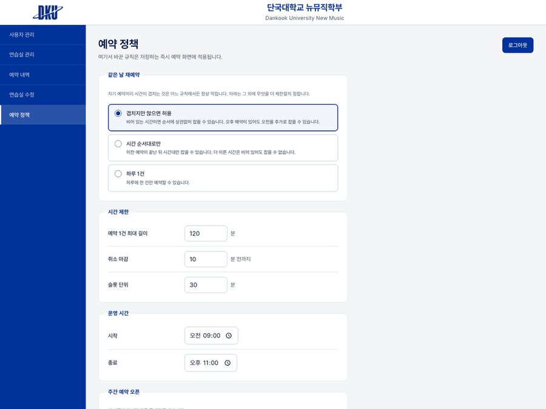

마디(Madi)
관리자가 그린 배치도 위에서 바로 예약하는 연습실 플랫폼
Impact
- 연습실 배치도관리자가 그린 배치도 위에서 학생이 방을 골라 예약번호뿐인 연습실도 위치를 보고 고름
- 동시 예약 검증같은 방에 몰린 요청을 재현해 잠금 방식 4가지 비교중복 없이 한 건만 저장되는 방식 채택
- 설계 결정 기록요구사항과 설계 결정을 코드보다 먼저 정리고른 방식과 버린 대안을 이유와 함께 남김
Background
학과 연습실은 네 개 층 51실인데, 예약은 카페 댓글로 받았습니다.
빈 시간을 한눈에 볼 수 없었고, 124-2 같은 번호만으로는 연습실 위치도 알기 어려웠습니다.
예약 단위나 취소 기한 같은 규칙도 문서로 정리돼 있지 않았습니다.
교수님께 제안해 배치도 위에서 바로 예약하는 첫 버전을 FastAPI로 만들었고, 백엔드와 서버를 맡았습니다.
문서에 없던 규칙은 카페 공지와 학생, 과대표의 의견을 모아 정했습니다.
2026년 10월부터는 이 규칙을 요구사항으로 삼아, 여러 학원과 학교가 쓰는 플랫폼 「마디」를 Spring으로 만들고 있습니다.
Architecture

Contributions
그려서 만드는 연습실 지도
방이 많은 건물은 방 이름 목록만으로는 위치를 찾기 어렵습니다.
관리자가 층별 배치도를 직접 그리고, 학생은 그 지도에서 방을 골라 예약합니다.


같은 방에 몰린 예약은 한 건만
예약이 열리는 순간 같은 방에 요청이 몰리면, 조회한 뒤 저장하는 방식으로는 여러 건이 함께 저장됩니다.
잠금 방식 4가지를 같은 조건에서 비교해, 방과 날짜로 요청을 줄 세우는 advisory lock을 골랐습니다.
잠금을 빠뜨린 경로가 생겨도 겹치지 않게, DB 배타 제약(EXCLUDE)을 마지막 방어선으로 두었습니다.
학과마다 다른 예약 규칙
학과마다 예약이 열리는 시각, 같은 날 다시 예약하는 방식 같은 규칙이 다릅니다.
관리자가 이런 규칙을 화면에서 직접 고를 수 있게 했습니다.

예약과 학원 관리를 한 곳에서
음악학원은 연습실 예약과 원생 관리를 보통 다른 프로그램으로 따로 합니다.
마디는 예약과 원생, 수강, 출결, 청구를 한 서비스에 묶었습니다.
기관마다 필요한 기능만 켜서 쓸 수 있습니다.
Troubleshooting
구글 로그인이 느리면 DB 연결이 묶임
- 문제
- 구글 로그인 응답이 늦으면, 그동안 DB 연결 하나를 계속 붙잡고 있음
- 원인
- DB 트랜잭션 안에서 구글 토큰 교환(외부 요청)을 기다림
- 해결
- 토큰 확인을 트랜잭션 밖으로 빼고, 연결과 응답 대기 시간을 5초로 제한
- 결과
- 외부 서비스가 느려도 DB 연결이 묶이지 않음
남의 이메일로 먼저 가입하면 내 계정에 들어올 수 있었음
- 문제
- 누군가 내 이메일로 먼저 가입해 두면, 내가 구글로 로그인할 때 같은 계정에 연결되어 그 사람도 들어올 수 있음
- 원인
- 이메일이 같으면 계정을 자동으로 연결하는 방식
- 해결
- 이메일이 같아도 자동으로 연결하지 않고, 로그인한 상태에서 직접 구글 계정을 연결해야만 이어지게 함
- 결과
- 남이 먼저 만든 계정으로 내 구글 로그인이 이어지지 않음
10:00 예약이 01:00으로 보임
- 문제
- 예약이 겹쳤다는 안내에 10:00 예약이 01:00으로 표시됨
- 원인
- 응답 시각을 세계 표준시(UTC)로 내보냄
- 해결
- 모든 응답 시각을 기관 시간대(+09:00)로 맞추고, 시간대는 Asia/Seoul 같은 이름으로만 받음
- 결과
- 화면에 보이는 시각과 실제 예약 시각이 같아짐